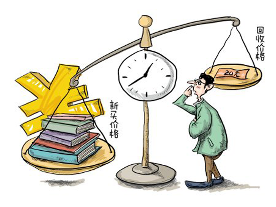
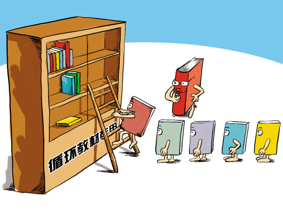
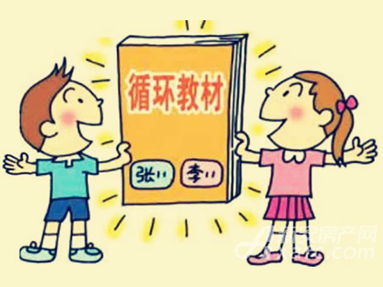
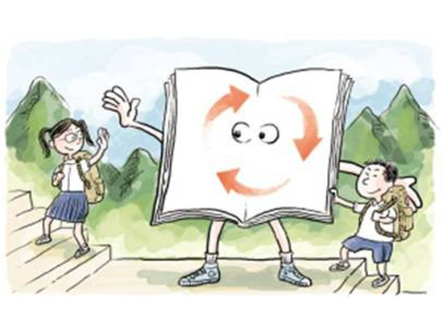
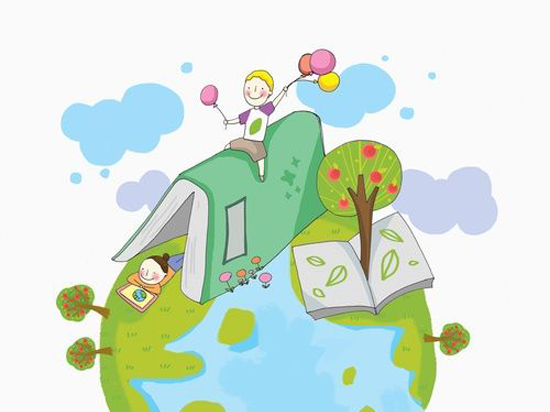

 2006年教育部、财政部下发专门文件，不允许校方强行收取教材预收款。 截至今天，大多数高校对学生仍然实行“一书一用”，即学生交书费购买教材。 我国目前高校学生人数约3560万，按照每生每年使用20本教材，每本教材价格25元计算， 全国每年书籍消耗量为71215万册，每年全国大学生的教材花费为1780386万元。  大学教材的使用度其实并不高。一本厚厚的教材，其实只有为数不多的地方会被做上记录。 一门课上完后，教材可能还是八成新。并且，大学的课程基本上都是修好一门就丢一门，一本教材一学期过后就可能再也用不到了。随意废弃，造成了极大的资金浪费和资源浪费。  所以，大学教材的循环、反复使用是很有必要和价值的。 相比于新教材，二手教材较为廉价，虽然书旧一些但基本上不影响使用，可以为学生剩下一大笔资金。购买二手教材，还有可能获得前人留下的宝贵笔记，有助于知识点的理解和吃透，这也是知识和经验的传承。学生用好之后的教材，还可以再次转卖。 因此，探讨高校二手教材市场具有经济、资源、环保三重意义。
 1、 通过深入实地调研，亲自实践了解旧教材的流通环节，分析教材循环流通现状和困境； 2、 从学校角度分析教材循环利用的相关政策制定，确定管理部门和相应管理制度； 3、 从技术角度分析找到能够让学校乐于支持的，学生乐于使用可靠稳定的解决方案； 4、 从经济角度分析可行的经济模型，使学生能够乐于让手中的闲置教材进入循环流通，保证其利益，而使用循环教材的学生能够自觉保护好教材，使之能够不断循环使用。
 1、 通过解决教材循环流通环节的存储环节，找到了解决教科书循环利用的症结，构建了以智能流转书柜为核心的的高校教材循环利用系统。 2、 设计完成基于物联网技术的智能存书柜，学生能够自主完成教材的循环使用，解决了教材循环使用过程中的卖书难，定价难，找书难，买书难，管理难等问题，便于学生使用，提高了教材的循环次数，是适合目前国内高校的教材循环使用的新的途径和方法。